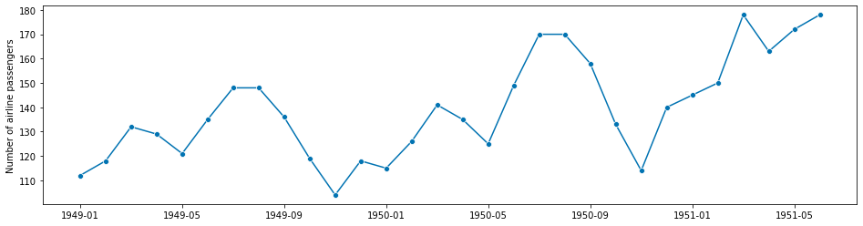
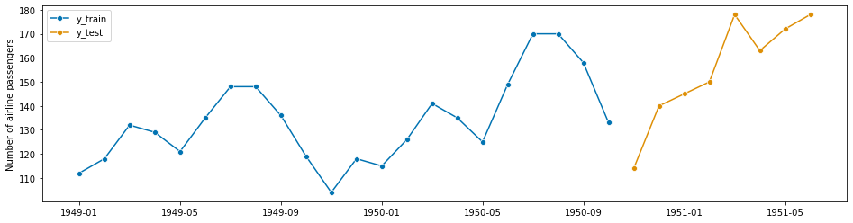
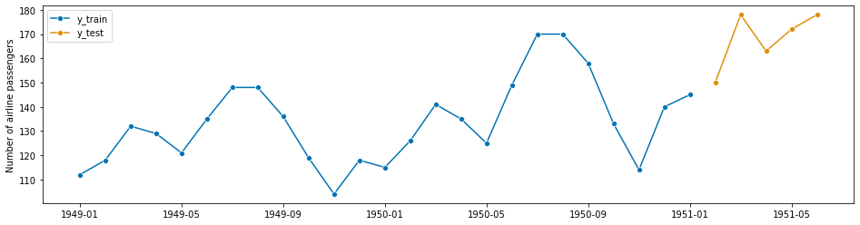
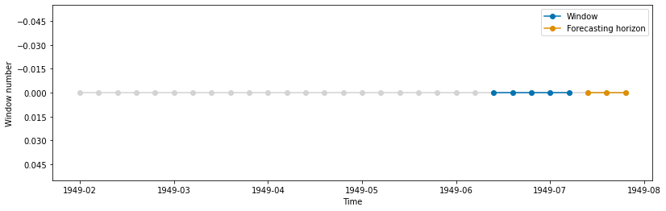
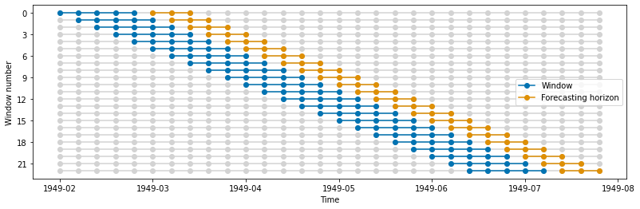
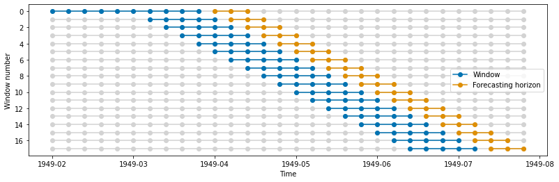
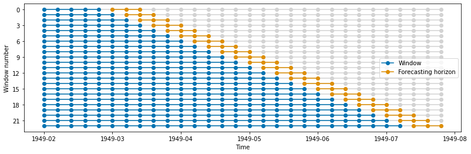
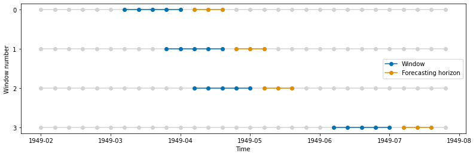

Window Splitters in Sktime#
In this notebook we describe the window splitters included in the `sktime.split <sktime/sktime>`__ module. These splitters can be combined with ForecastingGridSearchCV for model selection (see forecasting notebook).
Remark: It is important to emphasize that for cross-validation in time series we can not randomly shuffle the data as we would be leaking information.
References: - Cross-validation: evaluating estimator performance - Cross-validation for time series
Preliminaries#
[1]:
from warnings import simplefilter
import matplotlib.pyplot as plt
import numpy as np
import seaborn as sns
from matplotlib.ticker import MaxNLocator
from sktime.datasets import load_airline
from sktime.forecasting.base import ForecastingHorizon
from sktime.split import (
CutoffSplitter,
ExpandingWindowSplitter,
SingleWindowSplitter,
SlidingWindowSplitter,
temporal_train_test_split,
)
from sktime.utils.plotting import plot_series
[2]:
def plot_windows(y, train_windows, test_windows, title=""):
"""Visualize training and test windows"""
simplefilter("ignore", category=UserWarning)
def get_y(length, split):
# Create a constant vector based on the split for y-axis."""
return np.ones(length) * split
n_splits = len(train_windows)
n_timepoints = len(y)
len_test = len(test_windows[0])
train_color, test_color = sns.color_palette("colorblind")[:2]
fig, ax = plt.subplots(figsize=plt.figaspect(0.3))
for i in range(n_splits):
train = train_windows[i]
test = test_windows[i]
ax.plot(
np.arange(n_timepoints), get_y(n_timepoints, i), marker="o", c="lightgray"
)
ax.plot(
train,
get_y(len(train), i),
marker="o",
c=train_color,
label="Window",
)
ax.plot(
test,
get_y(len_test, i),
marker="o",
c=test_color,
label="Forecasting horizon",
)
ax.invert_yaxis()
ax.yaxis.set_major_locator(MaxNLocator(integer=True))
ax.set(
title=title,
ylabel="Window number",
xlabel="Time",
xticklabels=y.index,
)
# remove duplicate labels/handles
handles, labels = [(leg[:2]) for leg in ax.get_legend_handles_labels()]
ax.legend(handles, labels);
Data#
We use a fraction of the Box-Jenkins univariate airline data set, which shows the number of international airline passengers per month from 1949 - 1960.
[3]:
# We are interested on a portion of the total data set.
# (for visualisatiion purposes)
y = load_airline().iloc[:30]
y.head()
[3]:
Period
1949-01 112.0
1949-02 118.0
1949-03 132.0
1949-04 129.0
1949-05 121.0
Freq: M, Name: Number of airline passengers, dtype: float64
[4]:
fig, ax = plot_series(y)

Visualizing temporal cross-validation window splitters#
Now we describe each of the splitters.
A single train-test split using temporal_train_test_split#
This one splits the data into a traininig and test sets. You can either (i) set the size of the training or test set or (ii) use a forecasting horizon.
[5]:
# setting test set size
y_train, y_test = temporal_train_test_split(y=y, test_size=0.25)
fig, ax = plot_series(y_train, y_test, labels=["y_train", "y_test"])

[6]:
# using forecasting horizon
fh = ForecastingHorizon([1, 2, 3, 4, 5])
y_train, y_test = temporal_train_test_split(y, fh=fh)
plot_series(y_train, y_test, labels=["y_train", "y_test"]);

Single split using SingleWindowSplitter#
This class splits the time series once into a training and test window. Note that this is very similar to temporal_train_test_split.
Let us define the parameters of our fold:
[7]:
# set splitter parameters
window_length = 5
fh = ForecastingHorizon([1, 2, 3])
[8]:
cv = SingleWindowSplitter(window_length=window_length, fh=fh)
n_splits = cv.get_n_splits(y)
print(f"Number of Folds = {n_splits}")
Number of Folds = 1
Let us plot the unique fold generated. First we define some helper functions:
[9]:
def get_windows(y, cv):
"""Generate windows"""
train_windows = []
test_windows = []
for i, (train, test) in enumerate(cv.split(y)):
train_windows.append(train)
test_windows.append(test)
return train_windows, test_windows
Now we generate the plot:
[10]:
train_windows, test_windows = get_windows(y, cv)
plot_windows(y, train_windows, test_windows)

[11]:
test_windows
[11]:
[array([27, 28, 29])]
[12]:
train_windows
[12]:
[array([22, 23, 24, 25, 26])]
Sliding windows using SlidingWindowSplitter#
This splitter generates folds which move with time. The length of the training and test sets for each fold remains constant.
[13]:
cv = SlidingWindowSplitter(window_length=window_length, fh=fh)
n_splits = cv.get_n_splits(y)
print(f"Number of Folds = {n_splits}")
Number of Folds = 23
[14]:
train_windows, test_windows = get_windows(y, cv)
plot_windows(y, train_windows, test_windows)

Sliding windows using SlidingWindowSplitter with an initial window#
This splitter generates folds which move with time. The length of the training and test sets for each fold remains constant.
[15]:
cv = SlidingWindowSplitter(window_length=window_length, fh=fh, initial_window=10)
n_splits = cv.get_n_splits(y)
print(f"Number of Folds = {n_splits}")
Number of Folds = 18
[16]:
train_windows, test_windows = get_windows(y, cv)
plot_windows(y, train_windows, test_windows)

Expanding windows using ExpandingWindowSplitter#
This splitter generates folds which move with time. The length of the training set each fold grows while test sets for each fold remains constant.
[17]:
cv = ExpandingWindowSplitter(initial_window=window_length, fh=fh)
n_splits = cv.get_n_splits(y)
print(f"Number of Folds = {n_splits}")
Number of Folds = 23
[18]:
train_windows, test_windows = get_windows(y, cv)
plot_windows(y, train_windows, test_windows)

Multiple splits at specific cutoff values - CutoffSplitter#
With this splitter we can manually select the cutoff points.
[19]:
# Specify cutoff points (by array index).
cutoffs = np.array([10, 13, 15, 25])
cv = CutoffSplitter(cutoffs=cutoffs, window_length=window_length, fh=fh)
n_splits = cv.get_n_splits(y)
print(f"Number of Folds = {n_splits}")
Number of Folds = 4
[20]:
train_windows, test_windows = get_windows(y, cv)
plot_windows(y, train_windows, test_windows)

[21]:
train_windows
[21]:
[array([ 6, 7, 8, 9, 10]),
array([ 9, 10, 11, 12, 13]),
array([11, 12, 13, 14, 15]),
array([21, 22, 23, 24, 25])]
[22]:
test_windows
[22]:
[array([11, 12, 13]),
array([14, 15, 16]),
array([16, 17, 18]),
array([26, 27, 28])]
Generated using nbsphinx. The Jupyter notebook can be found here.